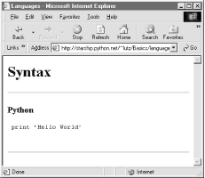
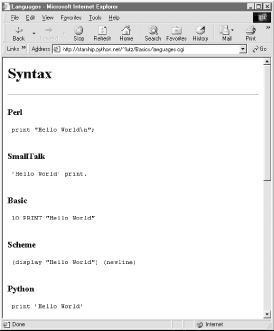
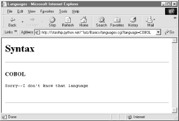

| I l@ve RuBoard |
|
12.4 The Hello World SelectorIt's now time for something a bit more useful (well, more entertaining, at least). This section presents a program that displays the basic syntax required by various programming languages to print the string "Hello World", the classic language benchmark. To keep this simple, it assumes the string shows up in the standard output stream, not a GUI or web page. It also gives just the output command itself, not the complete programs. The Python version happens to be a complete program, but we won't hold that against its competitors here. Structurally, the first cut of this example consists of a main page HTML file, along with a Python-coded CGI script that is invoked by a form in the main HTML page. Because no state or database data is stored between user clicks, this is still a fairly simple example. In fact, the main HTML page implemented by Example 12-16 is really just one big pull-down selection list within a form. Example 12-16. PP2E\Internet\Cgi-Web\Basics\languages.html<html><body>
<title>Languages</title>
<h1>Hello World selector</h1>
<P>This demo shows how to display a "hello world" message in various
programming languages' syntax. To keep this simple, only the output command
is shown (it takes more code to make a complete program in some of these
languages), and only text-based solutions are given (no GUI or HTML
construction logic is included). This page is a simple HTML file; the one
you see after pressing the button below is generated by a Python CGI script
which runs on the server. Pointers:
<UL>
<LI>To see this page's HTML, use the 'View Source' command in your browser.
<LI>To view the Python CGI script on the server,
<A HREF="languages-src.cgi">click here</A> or
<A HREF="getfile.cgi?filename=languages.cgi">here</A>.
<LI>To see an alternative version that generates this page dynamically,
<A HREF="languages2.cgi">click here</A>.
<LI>For more syntax comparisons, visit
<A HREF="http://www.ionet.net/~timtroyr/funhouse/beer.html">this site</A>.
</UL></P>
<hr>
<form method=POST action="languages.cgi">
<P><B>Select a programming language:</B>
<P><select name=language>
<option>All
<option>Python
<option>Perl
<option>Tcl
<option>Scheme
<option>SmallTalk
<option>Java
<option>C
<option>C++
<option>Basic
<option>Fortran
<option>Pascal
<option>Other
</select>
<P><input type=Submit>
</form>
</body></html>
For the moment, let's ignore some of the hyperlinks near the middle of this file; they introduce bigger concepts like file transfers and maintainability that we will explore in the next two sections. When visited with a browser, this HTML file is downloaded to the client and rendered into the new browser page shown in Figure 12-19. Figure 12-19. The "Hello World" main page That widget above the Submit button is a pull-down selection list that lets you choose one of the <option> tag values in the HTML file. As usual, selecting one of these language names and pressing the Submit button at the bottom (or pressing your Enter key) sends the selected language name to an instance of the server-side CGI script program named in the form's action option. Example 12-17 contains the Python script that runs on the server upon submission. Example 12-17. PP2E\Internet\Cgi-Web\Basics\languages.cgi#!/usr/bin/python
########################################################
# show hello world syntax for input language name;
# note that it uses r'...' raw strings so that '\n'
# in the table are left intact, and cgi.escape( ) on
# the string so that things like '<<' don't confuse
# browsers--they are translated to valid html code;
# any language name can arrive at this script: e.g.,
# can type "http://starship.python.net/~lutz/Basics
# /languages.cgi?language=Cobol" in any web browser.
# caveats: the languages list appears in both the cgi
# and html files--could import from a single file if
# selection list generated by another cgi script too;
########################################################
debugme = 0 # 1=test from cmd line
inputkey = 'language' # input parameter name
hellos = {
'Python': r" print 'Hello World' ",
'Perl': r' print "Hello World\n"; ',
'Tcl': r' puts "Hello World" ',
'Scheme': r' (display "Hello World") (newline) ',
'SmallTalk': r" 'Hello World' print. ",
'Java': r' System.out.println("Hello World"); ',
'C': r' printf("Hello World\n"); ',
'C++': r' cout << "Hello World" << endl; ',
'Basic': r' 10 PRINT "Hello World" ',
'Fortran': r" print *, 'Hello World' ",
'Pascal': r" WriteLn('Hello World'); "
}
class dummy: # mocked-up input obj
def __init__(self, str): self.value = str
import cgi, sys
if debugme:
form = {inputkey: dummy(sys.argv[1])} # name on cmd line
else:
form = cgi.FieldStorage( ) # parse real inputs
print "Content-type: text/html\n" # adds blank line
print "<TITLE>Languages</TITLE>"
print "<H1>Syntax</H1><HR>"
def showHello(form): # html for one language
choice = form[inputkey].value
print "<H3>%s</H3><P><PRE>" % choice
try:
print cgi.escape(hellos[choice])
except KeyError:
print "Sorry--I don't know that language"
print "</PRE></P><BR>"
if not form.has_key(inputkey) or form[inputkey].value == 'All':
for lang in hellos.keys( ):
mock = {inputkey: dummy(lang)}
showHello(mock)
else:
showHello(form)
print '<HR>'
And as usual, this script prints HTML code to the standard output stream to produce a response page in the client's browser. There's not much new to speak of in this script, but it employs a few techniques that merit special focus:
Now let's get back to interacting with this program. If we select a particular language, our CGI script generates an HTML reply of the following sort (along with the required content-type header and blank line): <TITLE>Languages</TITLE> <H1>Syntax</H1><HR> <H3>Scheme</H3><P><PRE> (display "Hello World") (newline) </PRE></P><BR> <HR> Program code is marked with a <PRE> tag to specify preformatted text (the browser won't reformat it like a normal text paragraph). This reply code shows what we get when we pick "Scheme." Figure 12-20 shows the page served up by the script after selecting "Python" in the pull-down selection list. Figure 12-20. Response page created by languages.cgiOur script also accepts a language name of "All," and interprets it as a request to display the syntax for every language it knows about. For example, here is the HTML that is generated if we set global variable debugme to 1 and run from the command line with a single argument, "All." This output is the same as what's printed to the client's browser in response to an "All" request:[9]
C:\...\PP2E\Internet\Cgi-Web\Basics>python languages.cgi All
Content-type: text/html
<TITLE>Languages</TITLE>
<H1>Syntax</H1><HR>
<H3>Perl</H3><P><PRE>
print "Hello World\n";
</PRE></P><BR>
<H3>SmallTalk</H3><P><PRE>
'Hello World' print.
</PRE></P><BR>
<H3>Basic</H3><P><PRE>
10 PRINT "Hello World"
</PRE></P><BR>
<H3>Scheme</H3><P><PRE>
(display "Hello World") (newline)
</PRE></P><BR>
<H3>Python</H3><P><PRE>
print 'Hello World'
</PRE></P><BR>
<H3>C++</H3><P><PRE>
cout << "Hello World" << endl;
</PRE></P><BR>
<H3>Pascal</H3><P><PRE>
WriteLn('Hello World');
</PRE></P><BR>
<H3>Java</H3><P><PRE>
System.out.println("Hello World");
</PRE></P><BR>
<H3>C</H3><P><PRE>
printf("Hello World\n");
</PRE></P><BR>
<H3>Tcl</H3><P><PRE>
puts "Hello World"
</PRE></P><BR>
<H3>Fortran</H3><P><PRE>
print *, 'Hello World'
</PRE></P><BR>
<HR>
Each language is represented here with the same code pattern -- the showHello function is called for each table entry, along with a mocked-up form object. Notice the way that C++ code is escaped for embedding inside the HTML stream; this is the cgi.escape call's handiwork. When viewed with a browser, the "All" response page is rendered as shown in Figure 12-21. Figure 12-21. Response page for "all languages" choice12.4.1 Checking for Missing and Invalid InputsSo far, we've been triggering the CGI script by selecting a language name from the pull-down list in the main HTML page. In this context, we can be fairly sure that the script will receive valid inputs. Notice, though, that there is nothing to prevent a user from passing the requested language name at the end of the CGI script's URL as an explicit parameter, instead of using the HTML page form. For instance, a URL of the form: http://starship.python.net/~lutz/Basics/languages.cgi?language=Python yields the same "Python" response page shown in Figure 12-20.[10] However, because it's always possible for a user to bypass the HTML file and use an explicit URL, it's also possible that a user could invoke our script with an unknown language name that is not in the HTML file's pull-down list (and so not in our script's table). In fact, the script might be triggered with no language input at all, if someone explicitly types its URL with no parameter at the end.
To be robust, the script checks for both cases explicitly, as all CGI scripts generally should. For instance, here is the HTML generated in response to a request for the fictitious language "GuiDO": <TITLE>Languages</TITLE> <H1>Syntax</H1><HR> <H3>GuiDO</H3><P><PRE> Sorry--I don't know that language </PRE></P><BR> <HR> If the script doesn't receive any language name input, it simply defaults to the "All" case. If we didn't detect these cases, chances are that our script would silently die on a Python exception and leave the user with a mostly useless half-complete page or with a default error page (we didn't assign stderr to stdout here, so no Python error message would be displayed). In pictures, Figure 12-22 shows the page generated if the script is invoked with an explicit URL like this: http://starship.python.net/~lutz/Basics/languages.cgi?language=COBOL To test this error case, the pull-down list includes an "Unknown" name, which produces a similar error page reply. Adding code to the script's table for the COBOL "Hello World" program is left as an exercise for the reader. Figure 12-22. Response page for unknown language |
| I l@ve RuBoard |
|